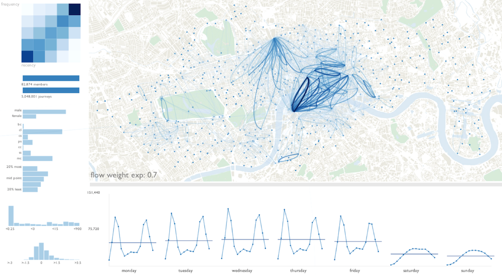

This project involves building some form of data visualization to represent use of the London Cycle Hire Scheme. This builds on the data visualization material covered previously in the BootCamp.
In the data visualization session, you were given data about how many London public hire bikes ("Boris bikes") were available at each docking station for the Sunday and Monday before term.
There are plenty data visualization designs you could build with the data, but here are a few examples to get you going (you don't have to build any or all of these, but the suggestions might help you think of your own projects):
